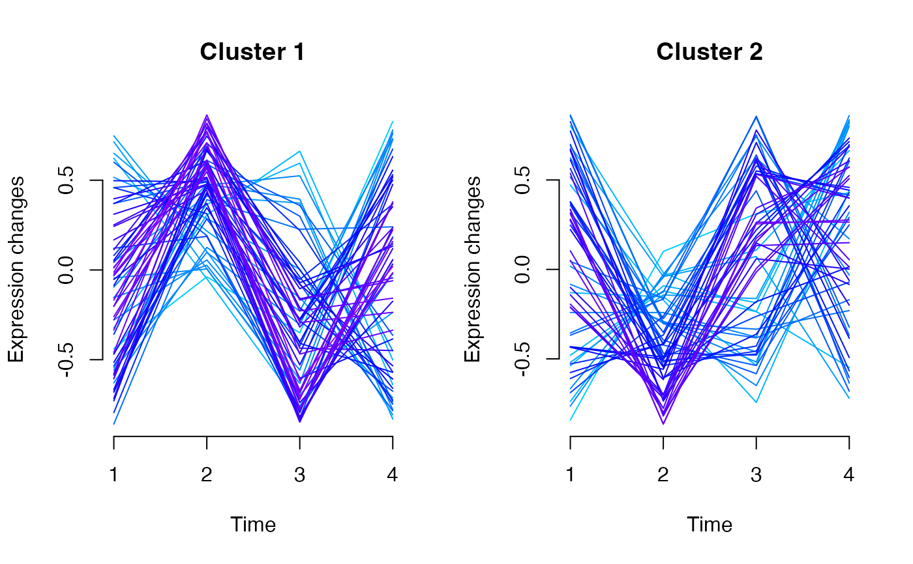

R/omics_array.R
clustInference-omics_array-numeric-method.RdBased on soft clustering performed by the Mfuzz package.
# S4 method for omics_array,numeric
clustInference(omicsarray, vote.index, new.window = FALSE)A omicsarray to cluster
Option for cluster attribution
Boolean. New X11 window for plots. Defaults to FALSE.
A list of two elements:
A data.frame of nrows(omicsarray) observations of 3 variables (name, cluster, maj.vote.index).
Additionnal info.
library(Patterns)
if(require(CascadeData)){
data(micro_S, package="CascadeData")
D<-Patterns::as.omics_array(micro_S[1:20,],1:4,6)
b<-Patterns::clustInference(D,0.5)
b
}

#> [[1]]
#> name cluster maj.vote.index
#> 1 1007_s_at 2 4
#> 2 1053_at 1 5
#> 3 117_at 1 3
#> 4 121_at 2 4
#> 5 1255_g_at 1 4
#> 6 1294_at 2 5
#> 7 1316_at 1 3
#> 8 1320_at 2 4
#> 9 1405_i_at 1 4
#> 10 1431_at 1 3
#> 11 1438_at 1 3
#> 12 1487_at 1 5
#> 13 1494_f_at 1 3
#> 14 1598_g_at 2 5
#> 15 160020_at 2 4
#> 16 1729_at 1 3
#> 17 1773_at 1 3
#> 18 177_at 1 3
#> 19 179_at 2 4
#> 20 1861_at 1 3
#>
#> $prop.matrix
#> [,1] [,2] [,3] [,4] [,5] [,6]
#> [1,] 0.3191777 0.5284629 0.6855016 0.5453869 0.4702657 0.6655674
#> [2,] 0.3198798 0.5194035 0.5105038 0.5888073 0.5641258 0.6025755
#> [3,] 0.5496458 0.2964489 0.2541255 0.6126908 0.7278955 0.3635137
#> [4,] 0.4647931 0.7192638 0.7236148 0.5409476 0.4967735 0.5116992
#> [5,] 0.7275745 0.6437605 0.5598380 0.6244305 0.3568113 0.4755197
#> [6,] 0.6027035 0.6710703 0.6722675 0.3800979 0.5834140 0.6428981
#> [7,] 0.4924144 0.6788992 0.3495325 0.2724703 0.5228924 0.6258023
#> [8,] 0.6403815 0.6700587 0.6327193 0.3651326 0.3171026 0.6646563
#> [9,] 0.5241723 0.6285869 0.4061019 0.6224719 0.5971690 0.2917453
#> [10,] 0.5138959 0.2676082 0.3312855 0.7067778 0.7028951 0.3209592
#> [11,] 0.2752011 0.5651389 0.2957780 0.4639917 0.7166440 0.6488580
#> [12,] 0.7008283 0.6979496 0.6447272 0.5834866 0.4549232 0.6331725
#> [13,] 0.4564140 0.5757160 0.3209260 0.3743975 0.5817847 0.5596011
#> [14,] 0.6326536 0.5694353 0.6928244 0.4225007 0.5520614 0.7360128
#> [15,] 0.7210206 0.7309500 0.6101791 0.3810929 0.2852876 0.5540585
#> [16,] 0.4172383 0.3796869 0.6498015 0.7051153 0.4579701 0.5093617
#> [17,] 0.3815836 0.5503057 0.3134690 0.4516436 0.5488920 0.7101831
#> [18,] 0.3857386 0.6448379 0.2395276 0.4783135 0.5572152 0.6666736
#> [19,] 0.5836652 0.6097265 0.6980495 0.3274625 0.7259779 0.2781799
#> [20,] 0.6081255 0.3722722 0.4477598 0.5872000 0.7080508 0.4682124
#>